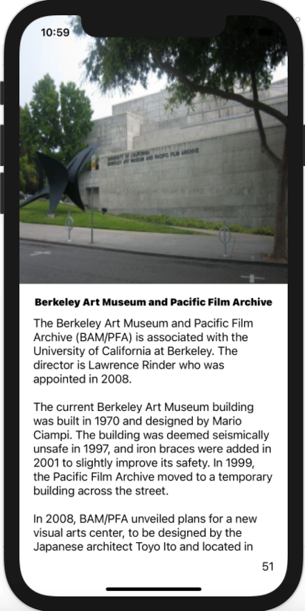

ActionMap
Actionmap is a RESTful full‑stack web application that allows users to view political representatives and events in their area. Users can aggregate, share, and view news items in their locality which is all implemented in a RESTful application programming interface. It was developed using Ruby on Rails while following the Agile lifecycle, using the Model‑View‑Controller design pattern, and performing peer‑programming. Travis‑Ci was utilized for code quality tests, syntax reviews, and to validate commits based on custom test cases. Codecov was used to measure and increase test coverage of the codebase. I worked on this project in a team of 3 for CS 169 (Software Engineering).
Ruby on Rails • RESTful API • Travis CI • Codecov • Model-View-Controller • Agile lifecycle
Website Link

Epidemic Simulator
An epidemic simulator written in Python. The simulator simulates how one infected cell can quickly infect other cells depending on some factors. The user has the ability to change the travel radius, encounters per day, transmission rate, and fatality rate for each given time step. The simulator can also be played till all cells are infected or paused at any given time step.
Python • NumPy • Matplotlib
GitHub Source
6-Pack Abs
I developed an iOS mobile application that conveniently, through auditory cues, guides users through an abdominal workout routine. I found fitness apps at the time required too much manual input for a simple routine which motivated me to develop 6-Pack Abs.
Swift • UITableView • Model-View-Controller
GitHub Source
|
|
 |
 |
CalTours
I developed a campus tour iOS mobile application that gives users information about various points of interest around the Cal campus. I made this app to help me during the opportunity I was given to conduct a tour of the campus.
Swift • PageViewController • JSON • Model-View-Controller
GitHub Source
Pathtracer
Pathtracer is a physically-based renderer that uses a pathtracing algorithm to generate realistic pictures. I implemented light reflection for mirror materials and refraction for glass materials. This allows me to render objects that reflect or refract light which creates beautiful looking scenes. In addition, I also implemented microfacet materials with the ability to change the alpha, or roughness, of the material. Altering the alpha makes the material more glossy or matte. This project was a part of CS 184 (Computer Graphics and Imaging).
C++ • OpenGL • Physically Based Lighting • Bounding Volume Hierarchy
Write-up
MOOCbase
I implemented the functionality required for a custom relational database. Functionality that I implemented includes adding multi granularity locking to support concurrent execution, database recovery in case of crashes, query optimization for faster queries, support for B+ tree indices, and efficient join algorithms. This project was a part of CS W186 (Database Systems).
Java • Multi granularity locking • Database Recovery • Query Optimization • B+ tree indices
UnicornBox
UnicornBox is an end-to-end encrypted file sharing web application. The data is protected such that an adversary has almost no chance of deciphering the data. Hashing, salting, symmetric and asymmetric encryption, along with many other methods were implemented in Go for this web application. This project was a part of CS 161 (Computer Security).
Go • Argon2 • RSA • SHA-256 hashing • Salting